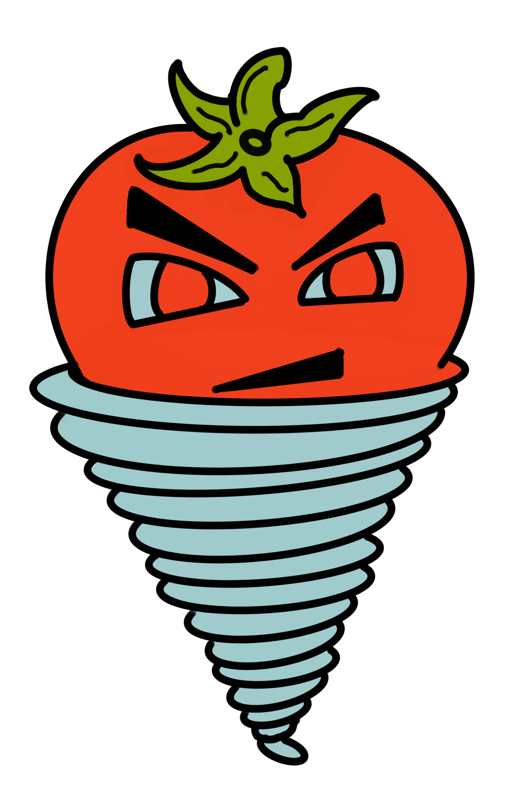

Tin Ta Maytoes
☰
Menu
HOME
Collaborators
Features
Tools & Frameworks
Technical Risks
User Flow
Wireframes
DB Schema
API Routes
Visual Design
Revise & Prioritize
Project Timeline
MVP - features
Loads up a intro video on explaining the name
When loaded, play button is displayed and links to the start of gameplay
When loaded, play button is displayed and links to the start of gameplay